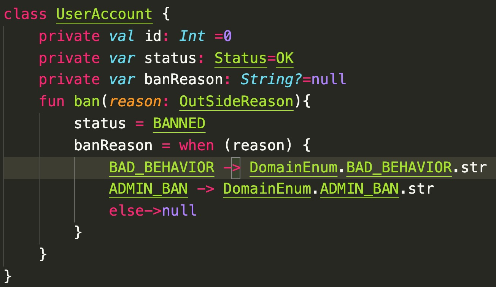

我是谁
TODO领域驱动设计入门
应对软件复杂性
分享路线图
- 为什么做这个分享?
- 关于领域驱动设计
- DDD 案例研究
- 结论与 Q&A
为什么做这个分享?
应对编码中的痛点

- 如何写出更简洁, 直接明了的业务代码?
- 如何对业务逻辑做出恰当的抽象?
- 如何将业务逻辑和技术细节分离?
- 如何让代码更容易变更?
- 如何让代码更易于测试?
关于领域驱动设计
核心原则
- 以业务为核心开展活动
- 以业务为核心开展活动
- 以业务为核心开展活动
由 Eric Evans 提出的一种架构软件的方法
- 产研实践的问题
- 领域驱动设计的特点
领域驱动设计(DDD)的特点
业务在 DDD 方法论中处在核心位置
- 以业务为核心, 围绕业务开展活动
- 建立全员一致的业务理解
- 更好的团队投入与参与(产品, 运营, 开发者, etc)
- 更好的发掘/梳理业务价值, 聚焦高价值的业务
- 领域模型即业务逻辑
- 代码更加易于维护,扩展;(可能)更高的代码质量
DDD 是什么?
初识 DDD
"DDD" = Domain Driven Design
"领域驱动设计"
一套指导软件设计与实施的方法论
关键术语
| 术语 | 意义 | 说明 |
|---|---|---|
| 领域 | 问题空间 | 某一类业务问题, 比如"如何发布内容" |
| 限界上下文 | 解空间 | 对应于某一个领域的解决方案, 比如内容发布系统 |
| 领域模型 | 对领域内的对象建模, 封装业务逻辑 | 内容发布系统中的"评论"对象, 具有删除动作 |
| 实体对象 | 领域模型的一种, 具有全局唯一性 | "发布系统"上下文中的"评论"对象是实体对象 |
| 值对象 | 领域模型的一种, 生命周期短, 不唯一 | "发布系统"上下文中的"帖子"对象的内容文本是值对象 |
举例说明
对于"社区内容"问题(领域):
我们定义出"帖子上下文"(限界上下文);
在该上下文中, 我们有帖子这一(实体)对象;
该对象可能包含的属性有 "帖子标题", "帖子内容"
这些属性都是值对象
如何实施 DDD?
- 梳理业务逻辑
- 输出共识
- 为领域建模
- 围绕领域构建服务
1. 梳理业务逻辑
这是 ddd 开始阶段要做的第一件事
我们可以使用名为"EVENT STORMING"的技术来帮助我们梳理业务
EVENT STORMING 步骤参考
- 确定要讨论的业务
- 召集相关方聚在有白板的会议室中
- 通过brainstorm 提出业务的事件, 贴上白板
- 如果事件 A 触发了事件 B, 连接它们
- 重复3-4步
最后我们就得到了业务的全部流转逻辑
2. 输出共识
共识即领域通用语言
通用语言包含:
- 领域 和 限界上下文
- 用语词典
- 业务流程图
领域 & 限界上下文
领域: 问题空间
限界上下文: 属于解空间 需要由团队人为划定边界
例如, 对于订单这一业务
"领域" = 电商平台如何管理订单?
"子域" = 电商平台如何对每笔订单实时追踪?
(其中一个)"限界上下文" = "追踪上下文", 包含了订单追踪系统解决方案, 比如:
- 物流运输部门
- 物流软件系统 ...
用语词典
"合集"领域的词典
| 用语 | 说明 |
|---|---|
| 合集 | 用于组织用户发布的帖子的一种承载物 |
| 用户 | 一个用户即代表一个具备合集权限的社区用户 |
| 帖子 | 社区单个用户单次生产内容的主要形式, 可以包含文本,图片,视频多种内容 |
| ... | ... |
流程图

conclusion 1
- DDD 以业务为中心, 业务即Domain(领域)
- "理解领域"是实施 DDD 的第一步
- 达成并输出共识十分重要
3. 为领域建模
i.e. 将业务逻辑封装在领域模型中!
| NO | YES |
|---|---|
 |
"值对象"
- 不唯一
- 生命周期短
- 不可变
试看一例
data class Title(
val title: String
) : SimpleValueObject<Title> {
init {
if (title.isBlank()) {
throw BadRequestException()
}
if (title.length > 30) {
throw BadRequestException()
}
}
}
data class CompilationID(
val id: Long
) : SimpleValueObject<CompilationID> {
init {
if(id <= 0) {
throw BadRequestException()
}
}
}
"实体对象"
- 唯一性/身份
- 生命周期长
- 可变
试看一例
class Compilation private constructor(
val compilationID: CompilationID,
val author: Author,
private var title: Title,
private var description: Description?,
private var cover: String?,
private var status: CompilationStatus,
private var createTime: Long
) : SmartEntity<Compilation>() {
fun title() = title
fun updateTitle(newTitle: Title) {
title = newTitle
refreshTouchTime()
}
/*
......... some other detail
*/
}
创建纯洁的领域对象
- 忘记 DB, 领域优先

| NO | YES |
|---|---|
创建纯洁的领域对象
- 对象对应于上下文中的一个清晰概念
| NO | YES |
|---|---|
创建纯洁的领域对象
- 对象只有单一的职责(SRP)
| NO | YES |
|---|---|

|
创建纯洁的领域对象
- 对象不知道其职责以外的任何知识
| NO | YES |
|---|---|
|  |
conclusion 2
- 用领域模型体现业务逻辑
- 创建纯洁的领域对象
4. 围绕领域构建服务
- 领域模型是整个服务的核心部分
- "应用(服务)"是操作领域模型的唯一入口
- 持久化及IO交给基础设施来实现
架构一览
conclusion 3
- 架构/基础设施应该与领域模型解耦
- 使用 CQRS 模式
To sum it up
DDD 是什么?
以业务为中心的软件设计和实施方法论
为什么要学习 DDD ?
- 产研实践损害了业务完整性
- DDD 框架围绕业务开展活动
如何实施 DDD?
- 梳理业务逻辑
- 建立并输出业务共识
- 设计领域模型
- 推导并实现服务组件
More
Q & A
References
if you're still interested
欢迎阅读 DDD 实战记录
以及参考社区合集实现